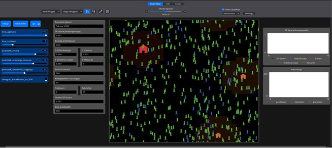
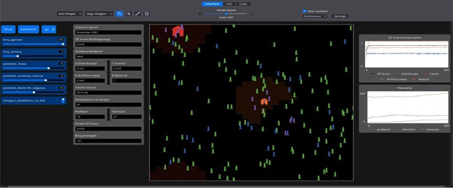
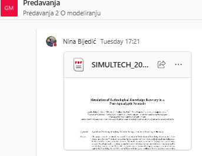
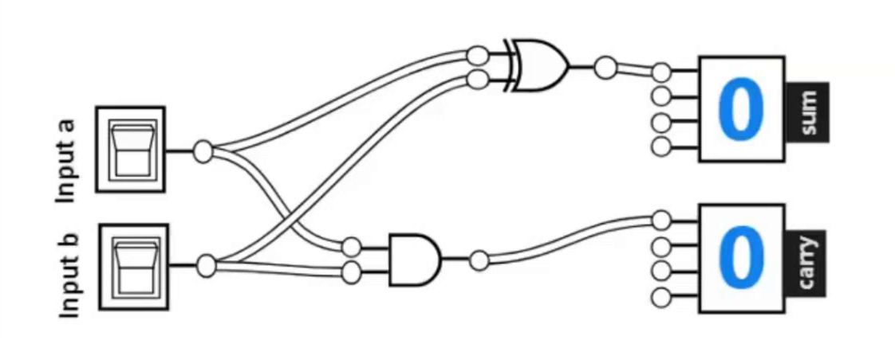
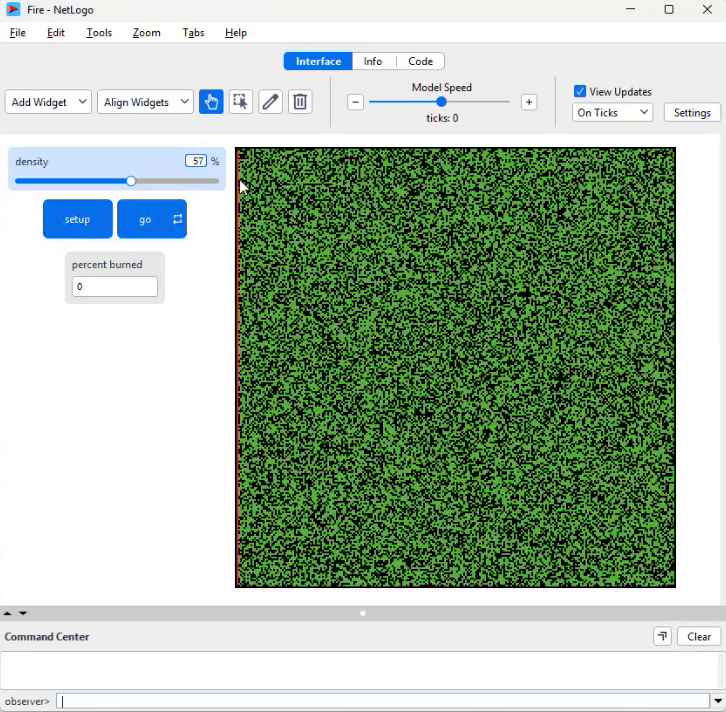
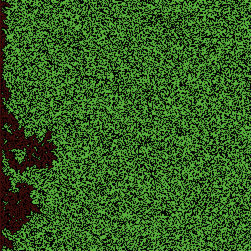
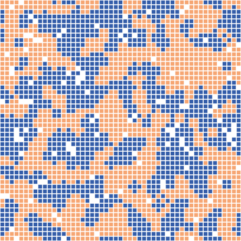
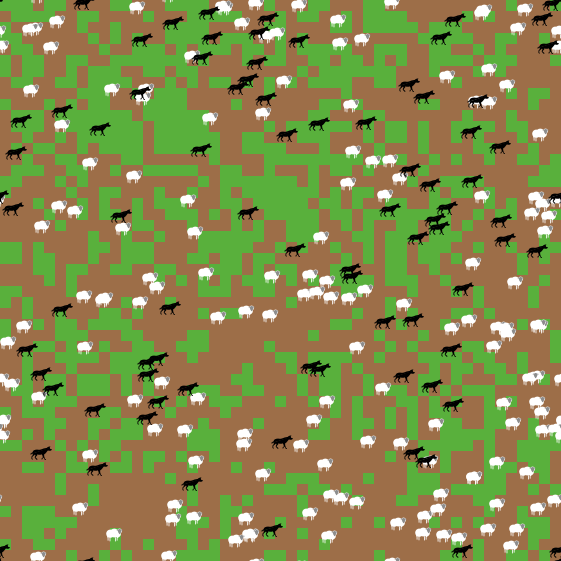
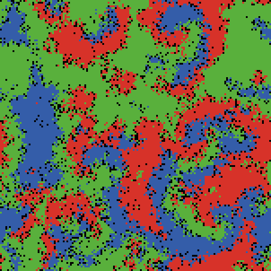
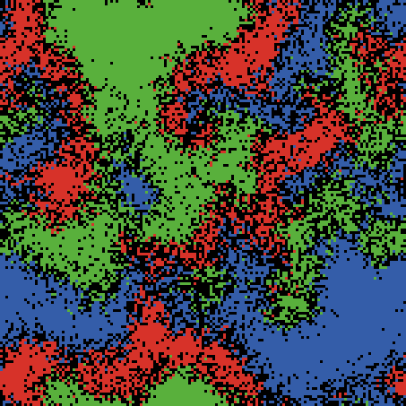

Modeliranje i simulacije
Vježbe 2 — ponavljanje: vježbe 1, predavanje, četiri modela izmjerena u NetLogu i NetLogo objašnjen kroz C#
Adil Joldić · subota, 17.10.2026. · Fakultet informacijskih tehnologija, UNMO

Od strukture programa do interakcije agenata
Vježbe 1 · 09.10.
model · simulacija · agent · NetLogo · četiri modela · prvi program
Adil Eminagić
Predavanje 1 · 13.10.
pravila predmeta · tema: društvo · postupak modeliranja · prijedlozi tema
prof. Nina Bijedić
Vježbe 2 · danas
ponavljanje
gradimo model – prvi dio
Adil Joldić
Do ~03.11.
tema i cilj modela · tim u General · utemeljenje u istraživanju
vaši timovi
Vaši rezultati se zbog slučajnosti mogu razlikovati u decimalama, ali obrazac ostaje isti.
Prijedlozi tema kolega su navedeni bez imena, kao primjeri kriterija.
Modeliranje i simulacije · Vježbe 2 · ponavljanje · FIT UNMO 2026/27
2
Predmet
Sažetak predavanja 1: polaganje, timski rad i tema ove godine.
3
Dva načina polaganja; i neuspješan model može dobiti ocjenu 10
- 1 Polaganje i ocjena
- 2 Utemeljenost i nastavak
Put 1 · tokom semestra
Radi se u NetLogu, uz pomoć asistenata pri kodiranju. Predaja je moguća čim ste spremni.
Put 2 · ispit
Bez vlastite teme i bez timskog rada kroz semestar.
Šta se ocjenjuje
Rezultati bi idealno trebali biti oni koje bismo očekivali u većini slučajeva.
Pronalaženje uzroka zbog kojeg model ne ostvaruje cilj je vrijedan rezultat.
Ocjene unutar tima nisu iste.
Modeliranje i simulacije · Vježbe 2 · ponavljanje · FIT UNMO 2026/27
4
Dva načina polaganja; i neuspješan model može dobiti ocjenu 10
- 1 Polaganje i ocjena
- 2 Utemeljenost i nastavak
Utemeljenost
Promjena nakon interakcije mora biti opravdana.
Za neke teme pomaže mali upitnik, npr. kod iseljavanja: kako odlazak prijatelja mijenja vašu odluku.
Društvo koje poznajemo lakše je modelirati; statistika drugih država je ponekad potpunija. Oba izbora su prihvatljiva.
Originalnost i nastavak
Zato je ovogodišnja opća tema društvo: u toj oblasti još nije sve modelirano.
Vaš model postaje stručni rad i šalje se na konferenciju.
Primjer: rad master studenata sa SIMULTECH 2026, prikazan u nastavku.
Modeliranje i simulacije · Vježbe 2 · ponavljanje · FIT UNMO 2026/27
5
Tim: do tri člana i obavezan vođa; ocjene su pojedinačne
- 1 Tim
- 2 Raspored
Zašto tim
Svaki član izradi svoj model, a tim ih zatim uporedi; tako je nastao i rad sa SIMULTECH-a.
Prijava i vođa
Vođa navodi doprinos svakog člana.
Promjena tima i rizik
Sastav tima može se mijenjati tokom semestra: vođa može prijaviti člana koji se ne javlja ili ne radi.
Modeliranje i simulacije · Vježbe 2 · ponavljanje · FIT UNMO 2026/27
6
Tim: do tri člana i obavezan vođa; ocjene su pojedinačne
- 1 Tim
- 2 Raspored
Faza 1 · Tema
Faza 2 · Model
Faza 3 · Kod i simulacije
4 sedmice, do ~03.11.
Prva faza je skraćena za sedmicu zbog bolovanja.
5 sedmica
Model se prvo opisuje, pa tek onda programira.
5 sedmica
Pisanje koda je u ovoj fazi jednostavniji dio posla.
Modeliranje i simulacije · Vježbe 2 · ponavljanje · FIT UNMO 2026/27
7
Uslov za prihvatanje teme: agenti djeluju jedni na druge
Kriteriji s predavanja
| Prijedlog | Procjena | Obrazloženje / naredni korak |
|---|---|---|
| Utjecaj nikotina i vapinga na pluća | odbijeno | ćelijski nivo — nije društvo |
| Faktori neplodnosti kod žena 20–30 | preusmjereno | nema interakcije → koja kampanja najbolje podiže svijest |
| Igre na sreću i porodični odnosi | preusmjereno | |
| Modeliranje saobraćaja | uslovno | samo ako je vezano za pojavu u društvu |
| AI i produktivnost studenata | uslovno | istraživanja tek u toku — premalo podataka |
| Antivakcinalni stavovi i žarišta bolesti | prihvaćeno | |
| Iseljavanje obrazovanih i spirala propadanja | prihvaćeno | |
| Povjerenje u institucije i nekažnjeno kršenje pravila | prihvaćeno | |
| Niska potreba za društvenim odobravanjem | prihvaćeno | |
| Tipovi ličnosti u timu (Stanfordski eksperiment) | prihvaćeno | |
| Društvene mreže, trendovi i potrošnja | prihvaćeno |
Modeliranje i simulacije · Vježbe 2 · ponavljanje · FIT UNMO 2026/27
8
Redoslijed modeliranja: cilj, agenti, zatim izbor atributa
1 Cilj
„U modeliranju je najbitnije osmisliti model.“ Cilj određuje sve ostalo.
2 Vrste agenata
Ljudi su gotovo uvijek uključeni; institucija često određuje razliku između scenarija.
3 Atributi
U tome pomaže tim: svaki član izradi model, a zatim se uporedi koji atributi ostaju. Atribut koji ne koristi nijedna interakcija ni mjera je suvišan.
4 Interakcije
Tema bez interakcije ne ispunjava kriterij; zato je tema o neplodnosti preusmjerena na kampanje.
5 Globalne promjenjive
Na osnovu njih se piše i brani rad.
6 Kod, simulacije, objašnjenje
Objašnjenje je posebno važno kada model ne ostvari cilj.
Modeliranje i simulacije · Vježbe 2 · ponavljanje · FIT UNMO 2026/27
9
Osobine i atributi, trajanje ticka i slučajnost
Osobine i atributi
Osobina postaje atribut kad je pridružite agentu.
Integritet
Integritet 0,1 znači oko 90% šanse da agent promijeni stav pod uticajem; 0,9 — rijetko.
Trajanje ticka određujete sami
Model dužeg perioda treba uključiti rađanje, umiranje i prenošenje osobina; za kraći period to obično nije potrebno. Rad sa SIMULTECH-a: 1 tick = 1 mjesec.
breed [ ljudi covjek ]
ljudi-own [
stav ; -1..1
integritet ; 0..1
]
set stav stav +
razlika * (1 - integritet)class Covjek : Turtle
{
public double Stav;
public double Integritet;
}
Stav += razlika
* (1 - Integritet);Neodređenost je nužna
Ono što nije poznato ili se ne može izmjeriti zamjenjuje se slučajnošću. Zato jedno pokretanje nije dovoljno za zaključak.
Modeliranje i simulacije · Vježbe 2 · ponavljanje · FIT UNMO 2026/27
10
Primjer završenog modela: rad master studenata sa SIMULTECH 2026
- 1 Model
- 2 Mjera i zaključak


Simulation of Technological Knowledge Recovery in a Post-Apocalyptic Scenario
SIMULTECH 2026, međunarodna konferencija o simulaciji i modeliranju.
Pitanje
Primjer tehnologije: elektroenergetska mreža.
Agenti i vrijeme
1 tick = 1 mjesec · 6 tickova = semestar · 12 = godina.

Modeliranje i simulacije · Vježbe 2 · ponavljanje · FIT UNMO 2026/27
11
Primjer završenog modela: rad master studenata sa SIMULTECH 2026
- 1 Model
- 2 Mjera i zaključak
Mjera ishoda
D raspoređenost znanja · C dostupnost centara · K kritična masa stručnjaka · R interni resursi.
Zaključak
Najbolji ishod daje obrazovanje raspoređeno po cijelom prostoru: mreža škola i obavezno osnovno obrazovanje.
Zašto je bitno
Primjer s predavanja: znanje o rimskom betonu izgubljeno je u ranom srednjem vijeku, a savremeni cement razvijen je tek u 19. vijeku.
Kako je nastao
Isti postupak preporučuje se i vašim timovima.
Modeliranje i simulacije · Vježbe 2 · ponavljanje · FIT UNMO 2026/27
12
Teorija
Model, simulacija, agent i modeliranje zasnovano na agentima — iz vježbi 1 i predavanja.
13
Model zadržava ono što je bitno za cilj i izostavlja ostalo

Saobraćaj u Mostaru
Model istog grada za pitanje zagađenja tražio bi sasvim druge atribute.
Model
Dobra apstrakcija sačuva upravo ono što treba za cilj.
// osoba ima beskonačno osobina;
// za prosjek ocjena trebaju samo ove
class Student
{
public string Ime, Prezime, Indeks;
public List<int> Ocjene = new();
public double Prosjek() => Ocjene.Average();
}Modeliranje i simulacije · Vježbe 2 · ponavljanje · FIT UNMO 2026/27
14
Saobraćajna gužva nastaje iz pravila ponašanja vozača
- 1 Pojmovi
- 2 Agent u kodu
Simulacija
Udvostručite broj vozila, blokirajte put zbog nesreće ili dodajte novi put, pa pratite nastaje li gužva.
Agent
Za to ne treba ni mašinsko učenje ni AI — dovoljan je skup pravila.
Modeliranje zasnovano na agentima
Model rijetko ima jednog agenta; u gradu ih je hiljadu i više. Obrazac koji tako nastaje zove se emergencija.
Kompleksni adaptivni sistem
Kompleksan sistem: isti ulaz ne daje uvijek isti izlaz. Adaptivan sistem: procesi mijenjaju njegova stanja.
Modeliranje i simulacije · Vježbe 2 · ponavljanje · FIT UNMO 2026/27
15
Saobraćajna gužva nastaje iz pravila ponašanja vozača
- 1 Pojmovi
- 2 Agent u kodu
class Vozac : Agent
{
// agent = pravila + okolina; bez ML-a
public void Korak(Okolina o)
{
if (o.Semafor == Svjetlo.Crveno) { Stani(); return; }
if (o.UdaljenostIspred < 5) Uspori();
else Ubrzaj();
VoziDesnomTrakom();
}
}
// 1000 vozača × ova pravila = gužva
// koju niko nije napisao
foreach (var v in vozaci)
v.Korak(okolina);Emergencija
Zato se ponašanje ovakvog sistema proučava simulacijom.
Ne radimo
Radimo
Isti pristup kao MIT-ov kurs 3.021J koji je spomenut na predavanjima.
Modeliranje i simulacije · Vježbe 2 · ponavljanje · FIT UNMO 2026/27
16
NetLogo
Interfejs, svijet i četiri tipa agenata. NetLogo je otvorenog koda i namijenjen modeliranju; zato se koristi umjesto Pythona.
17
Tri kartice i Command Center: konzola za model koji radi
- 1 Kartice i kontrole
- 2 Svijet i Command Center

12341 Interface · Info · Code
2 Klizač
Ime klizača je globalna promjenjiva; ovdje gustina šume, 57%.
3 Dugmad
Forever ponavlja go dok se dugme ponovo ne klikne.
4 Monitor
Ovdje procenat izgorjele šume.
Modeliranje i simulacije · Vježbe 2 · ponavljanje · FIT UNMO 2026/27
18
Tri kartice i Command Center: konzola za model koji radi
- 1 Kartice i kontrole
- 2 Svijet i Command Center
5 Svijet (World)
6 Command Center
observer> označava ko izvršava kod; Tab ga mijenja u turtles> i patches>. Strelice gore i dolje prikazuju ranije komande.
7 Settings · On Ticks
U otvorenom modelu ostaju njegovi breedovi i obojeni patchevi. Verzija 7.0.4 sprema modele u formatu .nlogox; docs.netlogo.org.
Modeliranje i simulacije · Vježbe 2 · ponavljanje · FIT UNMO 2026/27
19
Turtles i patches: pokretni i stacionarni agenti
- 1 Četiri tipa agenata
- 2 Zašto baš ta imena
| Tip | Šta je | Koordinate |
|---|---|---|
| turtles | pokretni agenti: ovce, ljudi, vozila | decimalne |
| patches | polja mreže — stacionarni agenti | cijeli brojevi |
| links | veza između dva agenta tipa turtle | — |
| observer | upravlja modelom; nema položaj u svijetu | nema |
Patch je također agent
Zato se naziva stacionarnim agentom: ne kreće se, ali izvršava kod kao i turtle.
Svijet
Wolf Sheep: 51 × 51 · Fire: 251 × 251. Mijenja se u Settings.
class Turtle : Agent
{
public double X, Y; // decimalne
public double Heading; // smjer
public Color Color;
public void Forward(double d) {…}
public void Right(double deg)
=> Heading += deg;
}
class Patch : Agent
{
public int Pxcor, Pycor; // cijeli
public Color Pcolor;
}
class Link : Agent { public Turtle A, B; }
static class Observer { /* svijet */ }Modeliranje i simulacije · Vježbe 2 · ponavljanje · FIT UNMO 2026/27
20
Turtles i patches: pokretni i stacionarni agenti
- 1 Četiri tipa agenata
- 2 Zašto baš ta imena
Zašto „turtle“?
Djeca su vodila „kornjaču“ s olovkom — prvo robota na podu, pa trougao na ekranu.
right i left su rotacija, a ne bočni pomak. Podrazumijevani oblik je strelica, da se vidi smjer.
Zašto „Net“?
Tako stoji u FAQ-u priručnika NetLoga.
Zašto „patch“?
Turtles se kreću po parcelama; parcela može predstavljati travu, zagađenje ili cijenu stana.
Zašto „p“ u pxcor, pcolor?
ask turtles [ set pcolor red ] oboji parcelu ispod svake turtle — zato imena moraju biti različita od xcor i color.
Zašto množina?
Isto vrijedi za turtles i turtle 0. Zato breed traži oba oblika: breed [ ljudi covjek ].
Modeliranje i simulacije · Vježbe 2 · ponavljanje · FIT UNMO 2026/27
21
Četiri modela
Svaki model po istom redoslijedu: opis, zatim mjerenje. Sve vrijednosti su izmjerene u NetLogu 7.0.4, headless, uz više ponavljanja.
22
Fire: tri procentna poena gustine razdvajaju dva ishoda požara
- 1 Model
- 2 Mjerenje

Pitanje
Pravila
Požar kreće s lijeve ivice; vjetra nema; izgorjelo drvo se gasi.
Mijenjamo
ask fires [
ask neighbors4
with [ pcolor = green ]
[ ignite ]
set breed embers
]foreach (var f in fires.Shuffle()) {
var zelene = f.PatchHere.Neighbors4
.Where(n => n.Pcolor == Green)
.ToList();
foreach (var p in zelene) p.Ignite();
f.Breed = Embers; }Modeliranje i simulacije · Vježbe 2 · ponavljanje · FIT UNMO 2026/27
23
Fire: tri procentna poena gustine razdvajaju dva ishoda požara
- 1 Model
- 2 Mjerenje
Prag perkolacije ≈ 59%
Ispod praga požar gotovo uvijek zastane, iznad gotovo uvijek pređe.
Najveće rasipanje je upravo na pragu
Jedno pokretanje tu nije dovoljno; zato se svaki zaključak provjerava s više ponavljanja.
Izmjereno
Vježbe 1: 57% → ~15%, 60% → preko 50% — isti obrazac.
Modeliranje i simulacije · Vježbe 2 · ponavljanje · FIT UNMO 2026/27
24
Segregation: uz zahtjev od 30% sličnih susjeda nastaje 75% sličnih
- 1 Model
- 2 Mjerenje



set happy? similar-nearby >=
(%-similar-wanted * total-nearby / 100)
; C#: Happy = SimilarNearby >=
; Wanted * TotalNearby / 100.0;Pitanje
Pravila
Nezadovoljan se seli na slučajno slobodno mjesto. Gustina naseljenosti 95%.
Mijenjamo
Nadogradnje (IABM, pogl. 3)
Za teme o suživotu, iseljavanju i mješovitim sredinama.
Modeliranje i simulacije · Vježbe 2 · ponavljanje · FIT UNMO 2026/27
25
Segregation: uz zahtjev od 30% sličnih susjeda nastaje 75% sličnih
- 1 Model
- 2 Mjerenje
| prag | tickova do stabilizacije | % sličnih |
|---|---|---|
| 10% | 2 | 50 |
| 30% | 18 | 75 |
| 50% | 25 | 87 |
| 55% | 134 | 96 |
| 60% | bez stabilizacije (9/10) | 98 |
| 80% | bez stabilizacije | 51 |
Segregacija nastaje i bez namjere pojedinaca
Grad se ipak razdvoji. Zato samo postojanje segregacije ne dokazuje nečiju namjeru.
Prevelik zahtjev
94% agenata se stalno seli; udio sličnih padne na 51%, kao kod slučajnog rasporeda. Mjereno do 300 tickova; uz 1000 tickova se smiri i dio pokretanja na 60–75%, a iznad 75% nijedno.
Modeliranje i simulacije · Vježbe 2 · ponavljanje · FIT UNMO 2026/27
26
Wolf Sheep: ovce, vukovi i trava opstaju uz oscilacije
- 1 Model
- 2 Mjerenje

Pravila
Reprodukcija dijeli energiju između roditelja i mladunca; trava ponovo izraste nakon odbrojavanja.
Breedovi
Obje vrste su turtles, pa ask turtles pomjeri i ovce i vukove.
to eat-sheep ; vuk
let prey one-of sheep-here
if prey != nobody [
ask prey [ die ]
set energy energy
+ wolf-gain-from-food ]
endvoid EatSheep() // vuk
{
var prey = SheepHere()
.Shuffle().FirstOrDefault();
if (prey != null) {
prey.Die();
Energy += WolfGain; } }Modeliranje i simulacije · Vježbe 2 · ponavljanje · FIT UNMO 2026/27
27
Wolf Sheep: ovce, vukovi i trava opstaju uz oscilacije
- 1 Model
- 2 Mjerenje
Može li postojati ravnoteža?
Verzija s travom: u 3 od 3 pokretanja sve tri vrste opstaju 1000 tickova. Nakon ticka 100: ovce 97–236, vukovi 32–129.
Zamka
Model Wolf Sheep Predation (Models Library → Sample Models → Biology), verzija sheep-wolves-grass: od 1000 dodanih ovaca nakon jednog ticka preživi 0–6. Detalji su u dijelu Zamke.
Modeliranje i simulacije · Vježbe 2 · ponavljanje · FIT UNMO 2026/27
28
Rock Paper Scissors: ciklična dominacija bez trajnog pobjednika
- 1 Model
- 2 Mjerenje


Pravila
Polje je crveno, zeleno, plavo ili prazno; događaji sa susjedom izvršavaju se slučajnim redom.
Mijenjamo
bool Beats(Patch t) =>
(Pcolor == Red && t.Pcolor == Green)
|| (Pcolor == Green && t.Pcolor == Blue)
|| (Pcolor == Blue && t.Pcolor == Red);Agent ne mora biti pokretan
Patch izvršava kod i mijenja susjeda — dovoljno da bude agent.
Modeliranje i simulacije · Vježbe 2 · ponavljanje · FIT UNMO 2026/27
29
Rock Paper Scissors: ciklična dominacija bez trajnog pobjednika
- 1 Model
- 2 Mjerenje
Rjeđa reprodukcija, veće oscilacije
Po pokretanju 7%–15% naspram 11%–35%. Kad se praznine sporo popunjavaju, jedna boja privremeno preuzme veći dio prostora.
Sve tri boje opstaju
Najmanje 2027 od 22 801 polja — daleko iznad nule.
Modeliranje i simulacije · Vježbe 2 · ponavljanje · FIT UNMO 2026/27
30
Simulacija bez podataka: tvrdnja mora odgovarati utemeljenju
- 1 Dva pola
- 2 Šta model smije tvrditi
Segregation (Schelling, 1971)
Model tvrdi samo da je blaga sklonost dovoljna za oštru podjelu i ne opisuje konkretan grad. Zato mu podaci nisu potrebni. Schelling: Nobelova nagrada 2005.
Artificial Anasazi
Rekonstrukcija zajednice u dolini Long House (Arizona), uz arheološke podatke i klimu rekonstruisanu iz godova drveća. Opisuje konkretno društvo, pa traži podatke.
Umjesto jedne vrijednosti ispituje se raspon
Proizvoljno izabrana vrijednost i jedno pokretanje nisu dovoljni da se graf proglasi nalazom.
Modeliranje i simulacije · Vježbe 2 · ponavljanje · FIT UNMO 2026/27
31
Simulacija bez podataka: tvrdnja mora odgovarati utemeljenju
- 1 Dva pola
- 2 Šta model smije tvrditi
| Tvrdnja | Šta traži |
|---|---|
| mehanizam je dovoljan | uredan kod i sistematsko ispitivanje |
| obrazac je robustan | pretraga parametara, ponavljanja |
| reprodukuje poznatu pravilnost | stilizovane činjenice: S-kriva epidemije, zagađenje opada s udaljenošću |
| opisuje konkretan sistem | kalibracija na stvarnim podacima |
| predviđa | kalibracija + provjera na novim podacima — izvan obima semestra |
Realno za semestar
Upravo to se traži na ovom predmetu: utemeljenje u istraživanju i citirani izvori. Puni skup podataka nije obavezan.
„Korisnik unosi pretpostavke“?
Opravdano je ako je zaključak uslovan: „pod A, B i C, u rasponu D, pada 30–50%; ako se B promijeni, efekat nestaje“.
Modeliranje i simulacije · Vježbe 2 · ponavljanje · FIT UNMO 2026/27
32
Kod kroz C#
Poređenje s C#: ask odgovara foreach petlji nad promiješanim nizom, agent u bloku odgovara this, a nobody odgovara null.
33
Observer nije prozor, nego kontekst u kojem se izvršava kod
- 1 Ko izvršava kod
- 2 To je this
| Gdje je linija | Ko je izvršava |
|---|---|
| u setup ili go, izvan ask | observer |
| unutar ask turtles [ ] | svaka turtle, za sebe |
| unutar ask patches [ ] | svaki patch, za sebe |
| procedura pozvana iz ask | agent koji ju je pozvao |
to go ; OBSERVER
ask turtles [ ; svaka turtle:
right random 360 ; TURTLE - sebe
forward 1 ; TURTLE - sebe
]
tick ; OBSERVER
endforward 1
→ You can't use FORWARD in an observer
context, because FORWARD is turtle-only.void Go() // OBSERVER
{
foreach (var t in turtles.Shuffle())
{ // ask turtles
t.Right(rng.Next(360)); // TURTLE: this == t
t.Forward(1); // TURTLE
}
ticks++; // OBSERVER
}Observer nema položaj u svijetu
Modeliranje i simulacije · Vježbe 2 · ponavljanje · FIT UNMO 2026/27
34
Observer nije prozor, nego kontekst u kojem se izvršava kod
- 1 Ko izvršava kod
- 2 To je this
| NetLogo | Kao u kodu |
|---|---|
| observer | globalni scope, Main — kao window u konzoli |
| ask turtles [ ... ] | foreach t in turtles, nasumičnim redom |
| forward, color u bloku | this.Forward(), this.Color |
| other turtles | sve turtles osim this |
Zašto riječ „ask“?
Svaki agent izvršava blok u svom kontekstu: forward 1 pomjera upravo tog agenta. Ponašanje je opisano na nivou agenta.
Pravilo za čitanje bilo kojeg NetLogo koda
Ako nijedan agent nije this, liniju izvršava observer. Procedura pozvana iz ask (npr. kreni) izvršava se kao agent koji ju je pozvao.
Zato other u observeru ne izuzima nikoga
other turtles iz Command Centera vraća sve turtles, bez poruke o grešci.
Modeliranje i simulacije · Vježbe 2 · ponavljanje · FIT UNMO 2026/27
35
ask kao foreach sa slučajnim redoslijedom; with i if nisu uvijek isto
- 1 ask = foreach
- 2 with ili if
ask turtles [
right random 360
forward 1
]foreach (var t in turtles
.OrderBy(_ => rng.Next()).ToList())
{
t.Right(rng.Next(360)); // this == t
t.Forward(1);
}Cijeli blok, slučajan redoslijed
Zato dva pokretanja istog modela daju različite rezultate.
ask turtles = sve turtles
Oblik određuje samo izgled, ne grupu. Podskup: ask turtles with [ shape = "car" ] ili preko breeda: ask sheep.
Modeliranje i simulacije · Vježbe 2 · ponavljanje · FIT UNMO 2026/27
36
ask kao foreach sa slučajnim redoslijedom; with i if nisu uvijek isto
- 1 ask = foreach
- 2 with ili if
; WITH: prvo izabere, pa pita
ask turtles with [ color = red ] [ ... ]
; IF: svako odluči u svom trenutku
ask turtles [ if color = red [ ... ] ]// with = Where + ToList: snimak prije petlje
foreach (var t in turtles
.Where(x => x.Color == Red).ToList())
// if = provjera u trenutku
foreach (var t in turtles) if (t.Color == Red) ...| 3 crvene turtles; svaka crvena boji ostale u plavo | izvršenja | crvenih |
|---|---|---|
| if unutar ask | 1 | 1 |
| with izvan ask | 3 | 0 |
Isto u 5 od 5 ponavljanja. Kod if prva crvena turtle oboji ostale, pa one, kad dođu na red, više nisu crvene.
LINQ: odgođeno izvršavanje
Tada se ponaša kao NetLogo if, ne kao with.
Pravilo
Ta odluka se mora obrazložiti u radu.
Modeliranje i simulacije · Vježbe 2 · ponavljanje · FIT UNMO 2026/27
37
Patch je parcela: za observera svi patchevi, za turtle parcela ispod nje
- 1 Dva smjera
- 2 U kodu
| Odakle | Izraz | Šta dobijete |
|---|---|---|
| observer | patches | sve parcele svijeta |
| observer | patch 3 4 | jednu parcelu |
| turtle | pcolor | boju parcele na kojoj stoji |
| turtle | patch-here | parcelu na kojoj stoji |
| turtle | neighbors | 8 susjednih parcela |
| parcela | turtles-here | turtles na toj parceli |
| parcela | sheep-here | samo ovce na toj parceli |
Tri načina, isti rezultat
Za 40 turtles sva tri načina oboje isti skup od 39 parcela.
Zašto 39, a ne 40?
Na jednoj parceli može stajati više turtles.
Modeliranje i simulacije · Vježbe 2 · ponavljanje · FIT UNMO 2026/27
38
Patch je parcela: za observera svi patchevi, za turtle parcela ispod nje
- 1 Dva smjera
- 2 U kodu
; Wolf Sheep
ask patches [ grow-grass ]
; observer -> SVE parcele
to eat-grass ; OVCA
if pcolor = green [
; parcela ISPOD ovce
set pcolor brown
set energy energy
+ sheep-gain-from-food
]
endclass Turtle {
public Patch PatchHere =>
World.PatchAt(
(int)Math.Floor(X + 0.5),
(int)Math.Floor(Y + 0.5));
// pcolor iz turtle
public Color Pcolor {
get => PatchHere.Pcolor;
set => PatchHere.Pcolor = value;
} }
class Patch {
public IEnumerable<Turtle>
TurtlesHere => World.Turtles
.Where(t => t.PatchHere == this);
}Ljudi su turtles, prostor su parcele
Siromaštvo naselja, cijena stana, blizina škole, zagađenje. Ljudi reaguju na parcelu na kojoj stoje, kao ovca na travu.
Modeliranje i simulacije · Vježbe 2 · ponavljanje · FIT UNMO 2026/27
39
one-of other turtles: slučajan izbor drugog agenta
- 1 Čitanje
- 2 Šta smo izmjerili
turtles
sve turtles
other turtles
sve osim trenutnog agenta
one-of other turtles
jedna, nasumično
; srž interakcije u vježbama 2
let sagovornik
one-of other ljudi in-radius domet
if sagovornik != nobody [
let razlika
([ stav ] of sagovornik) - stav
...
]var sagovornik = ljudi
.Where(o => o != this
&& Udaljenost(o, this) <= domet)
.Shuffle().FirstOrDefault(); // nobody == null
if (sagovornik != null) {
var razlika = sagovornik.Stav - this.Stav;
...
}Modeliranje i simulacije · Vježbe 2 · ponavljanje · FIT UNMO 2026/27
40
one-of other turtles: slučajan izbor drugog agenta
- 1 Čitanje
- 2 Šta smo izmjerili
turtles
other turtles
one-of other turtles
Bez other agent može izabrati sebe
U modelu stava agent bi u trećini izbora izabrao sebe, pa bi interakcija bila slabija, bez poruke o grešci.
Kad nema nikoga: nobody
Bez provjere if ... != nobody izvršavanje se prekida greškom.
U observeru other ne izuzima nikoga
Izmjereno: other turtles iz observera vraća sve turtles, bez poruke o grešci.
Isti obrazac u drugim modelima
Radi i na listama: set pcolor one-of [ green brown ] — tako nastaje početna trava.
Modeliranje i simulacije · Vježbe 2 · ponavljanje · FIT UNMO 2026/27
41
Prvi program: setup jednom, go u petlji, tick izvan ask
- 1 Kod
- 2 Pravila
to setup
clear-all
create-turtles 100 [
setxy random-xcor
random-ycor
set color blue
set size 1.5
set shape "airplane"
]
reset-ticks
end
to go
ask turtles [
right random 360
forward 1 ]
tick
endclass Model {
List<Turtle> turtles = new();
int ticks;
public void Setup() { // SETUP
turtles.Clear(); // clear-all
for (int i = 0; i < 100; i++) // create-turtles
turtles.Add(new Turtle { X = RandomXcor(),
Y = RandomYcor(), Color = Blue, Size = 1.5 });
ticks = 0; // reset-ticks
}
public void Go() { // GO
foreach (var t in turtles.Shuffle()) {
t.Right(rng.Next(360)); t.Forward(1); }
ticks++; // tick: JEDNOM
}
}
// GO forever == while (!stop) model.Go();Modeliranje i simulacije · Vježbe 2 · ponavljanje · FIT UNMO 2026/27
42
Prvi program: setup jednom, go u petlji, tick izvan ask
- 1 Kod
- 2 Pravila
clear-all na početku setup
reset-ticks na kraju setup
tick u go, izvan ask
Sa 100 turtles jedan korak povećao bi brojač za 100.
go i go forever
setup i go su konvencija
Modeli iz biblioteke koriste te nazive, pa je dobro zadržati istu konvenciju.
Check u kartici Code
Izostavljen end je česta greška; poruka se pojavi kod sljedeće procedure.
Modeliranje i simulacije · Vježbe 2 · ponavljanje · FIT UNMO 2026/27
43
Nove mogućnosti
Kako su dobijene vrijednosti u ovoj prezentaciji: NetLogo bez prozora, LLM agent koji pokreće eksperimente i granice tog pristupa.
44
Headless: NetLogo bez prozora, stotine pokretanja jednom komandom
- 1 Komanda i eksperiment
- 2 Opcije i slike
"C:\Program Files\NetLogo 7.0.4\NetLogo_Console.exe" --headless
--model "Fire.nlogox" --setup-file eksperiment.xml --table rezultat.csv<experiments>
<experiment name="kriva" repetitions="10"
sequentialRunOrder="true"
runMetricsEveryStep="false" timeLimit="4000">
<setup>setup</setup> <go>go</go>
<metrics><metric>
burned-trees / initial-trees * 100
</metric></metrics>
<subExperiments><subExperiment>
<steppedValueSet variable="density"
first="50" step="1" last="70"></steppedValueSet>
</subExperiment></subExperiments>
</experiment>
</experiments>Isto u prozoru
Sporije, jer se iscrtava svaki korak; za nekoliko pokretanja je dovoljno.
Model se ne mijenja
Modeliranje i simulacije · Vježbe 2 · ponavljanje · FIT UNMO 2026/27
45
Headless: NetLogo bez prozora, stotine pokretanja jednom komandom
- 1 Komanda i eksperiment
- 2 Opcije i slike
Zamke (provjereno u 7.0.4)
Bez njega NetLogo javi samo „Failed to parse specified setup file“.
Ako CSV ima samo zaglavlje, model je prekinut bez poruke; pokrenite setup u prozoru i pogledajte grešku.
Skripta .bat ne radi kada putanja sadrži razmake.
Slike bez prozora
Sve slike modela u ovoj prezentaciji (požar, segregacija, ovce i vukovi, spirale) napravljene su tako, uz fiksni random-seed.
Paralelno
Pokretanja se raspoređuju na jezgre procesora.
Modeliranje i simulacije · Vježbe 2 · ponavljanje · FIT UNMO 2026/27
46
LLM agent pokreće eksperimente, a tumačenje ostaje istraživaču
- 1 Petlja i prompt
- 2 Provjera zaključka
pitanje + hipoteza
vi
eksperiment.xml
agent
headless pokretanja
NetLogo
CSV → tabela
agent
tumačenje
vi
novo pitanje
vi
U ovom folderu je moj-model.nlogox.
NetLogo 7.0.4 je u C:\Program Files\NetLogo 7.0.4.
Pitanje: da li jači uticaj medija povećava udio „za“?
Hipoteza: udio-za raste sa snaga-medija.
Napravi eksperiment.xml: snaga-medija 0..0.3 korak 0.05,
5 ponavljanja, 150 tickova, mjeri udio-za.
PRIJE pokretanja mi pokaži eksperiment.
NE izvodi zaključke koji nisu u brojevima;
za svaku razliku reci je li veća od rasipanja.Nove mogućnosti
Isto pitanje uz 5 seed vrijednosti, 10 vrijednosti parametra i 3 scenarija, bez ručnog pokretanja.
Chat napiše XML, a vi pokrenete jednu komandu.
Radite u direktoriju projekta i pročitajte komandu prije odobrenja.
Modeliranje i simulacije · Vježbe 2 · ponavljanje · FIT UNMO 2026/27
47
LLM piše kod koji radi, ali zaključke morate provjeriti sami
- 1 Petlja i prompt
- 2 Provjera zaključka
pitanje + hipoteza
eksperiment.xml
headless pokretanja
CSV → tabela
tumačenje
novo pitanje
Test iz pripreme predmeta
Kod se u NetLogu 7.0.4 pokrenuo bez ijedne izmjene i radio bez greške.
| LLM je u zaključku napisao | Šta kod zapravo radi |
|---|---|
| „Mišljenja se grupišu, polarizacija raste.“ | Pravilo razgovora postavlja oba agenta na njihov prosjek, pa se mišljenja mogu samo približavati. Polarizacija pada ili stoji u svih 10 isprobanih kombinacija. |
| „Društvo može propasti.“ | Kolaps nastaje kada saradnja padne ispod 0,1. Nijedna linija koda ne smanjuje saradnju, pa do kolapsa nikad ne dolazi. |
Šta iz toga slijedi
Svaku tvrdnju iz zaključka treba pronaći u kodu i u brojevima.
Pitanje na odbrani
Ako takve linije nema, tvrdnja ne stoji.
Modeliranje i simulacije · Vježbe 2 · ponavljanje · FIT UNMO 2026/27
48
Greške bez poruke: model radi, a rezultati su pogrešni
- 1 Greške bez poruke
- 2 Greške s porukom i seed
| Zamka | Posljedica | Izmjereno |
|---|---|---|
| create-sheep 1000 | varijabla koju ne postavite počinje s nulom | Wolf Sheep Predation: od 1000 ovaca nakon jednog ticka živih 0–6 |
| zaboravljen other | agent bira sebe | 1044 od 3000 izbora |
| with umjesto if | uslov provjeren u drugom trenutku | 3 izvršenja umjesto 1 |
| jedno pokretanje kao rezultat | slučajnost izgleda kao nalaz | isti model: 0,595 / 0,860 / 0,600 |
| ask turtles nakon breedova | pomjeraju se i agenti koji trebaju mirovati | vježbe 2: mediji se počnu kretati |
| parametar koji ne utiče na model | prividni efekat, zapravo slučajnost | 0,088 / 0,165 / 0,120 |
Prije nego prihvatite nalaz
Ako takvog dijela koda nema, nalaz nije potvrđen; potrebno je više ponavljanja, a ne drugačije tumačenje.
Modeliranje i simulacije · Vježbe 2 · ponavljanje · FIT UNMO 2026/27
49
Greške bez poruke: model radi, a rezultati su pogrešni
- 1 Greške bez poruke
- 2 Greške s porukom i seed
Dvije greške koje NetLogo prijavi
Rješenje: komandu staviti unutar ask turtles [ ... ]; vidi dio Kod kroz C#.
Determinizam kao u testovima
random-seed 42
setup
; C#: rng = new Random(42); Setup();Seed služi za otklanjanje grešaka i ponovljivost, ne za zaključke: rezultat uz jedan seed govori samo o tom seedu.
Modeliranje i simulacije · Vježbe 2 · ponavljanje · FIT UNMO 2026/27
50
Samoprovjera: uz svako pitanje naveden je slajd s odgovorom
Modeliranje i simulacije · Vježbe 2 · ponavljanje · FIT UNMO 2026/27
51
Do iduće sedmice
Tema i cilj modela trebaju biti definisani u prvoj fazi, do ~03.11. Tema se može prilagoditi dostupnim podacima.
Sa predavanja · prof. Nina Bijedić
Dobijeni spisak je opsežan; suzite ga prema svom interesovanju.
Iduće sedmice razgovaramo o idejama; pripremite prijedlog.
Sa vježbi
Prilog
Referentni materijal za čitanje: pokrivenost tema, sve izmjerene vrijednosti i izvori.
53
Prilog 1 — šta je pokriveno na vježbama 1, predavanju i vježbama 2
| Pojam | v01 | p01 | v02 i v03 |
|---|---|---|---|
| model, apstrakcija, simulacija | da | da | — |
| agent i modeliranje zasnovano na agentima | da | da | — |
| NetLogo interfejs, Models Library, Command Center | da | — | — |
| turtles, patches, links, observer | da | da | — |
| setup / go, dugmad, tick | da | da | — |
| breedovi (vrste agenata) | — | da | da |
| atributi (turtles-own), integritet 0–1 | — | da | da |
| interakcija u dometu (in-radius) | — | da | da |
| globalne promjenjive, monitori, grafovi | — | da | da |
| scenariji kao parametri (klizači, switch) | — | da | da |
Modeliranje i simulacije · Vježbe 2 · ponavljanje · FIT UNMO 2026/27
54
Prilog 2 — Fire: sve izmjerene vrijednosti (10 ponavljanja po gustini)
| gustina | prosjek % | min % | max % |
|---|---|---|---|
| 50% | 2,7 | 1,5 | 3,8 |
| 51% | 2,8 | 1,7 | 3,8 |
| 52% | 3,0 | 1,6 | 4,2 |
| 53% | 4,0 | 3,0 | 5,8 |
| 54% | 5,1 | 2,9 | 10,7 |
| 55% | 6,2 | 3,4 | 12,1 |
| 56% | 7,3 | 3,5 | 11,5 |
| 57% | 12,5 | 5,4 | 37,8 |
| 58% | 16,9 | 5,0 | 37,2 |
| 59% | 40,8 | 9,7 | 65,6 |
| 60% | 67,6 | 54,9 | 81,5 |
| gustina | prosjek % | min % | max % |
|---|---|---|---|
| 61% | 78,8 | 62,7 | 84,4 |
| 62% | 86,9 | 83,5 | 89,4 |
| 63% | 91,3 | 88,2 | 93,0 |
| 64% | 92,1 | 88,4 | 94,1 |
| 65% | 94,2 | 93,4 | 95,2 |
| 66% | 95,8 | 95,4 | 96,4 |
| 67% | 96,5 | 96,0 | 97,0 |
| 68% | 97,1 | 96,7 | 97,6 |
| 69% | 97,8 | 97,4 | 98,2 |
| 70% | 98,1 | 97,9 | 98,3 |
Modeliranje i simulacije · Vježbe 2 · ponavljanje · FIT UNMO 2026/27
55
Prilog 3 — Segregation: svi pragovi (10 ponavljanja, najviše 300 tickova)
| prag | tickova do stabilizacije (prosjek, najviše 300) | % sličnih na kraju | % nezadovoljnih | stabiliziralo se |
|---|---|---|---|---|
| 10% | 2,1 | 50,4 | 0,0 | 10 / 10 |
| 15% | 8,1 | 55,6 | 0,0 | 10 / 10 |
| 20% | 7,0 | 55,7 | 0,0 | 10 / 10 |
| 25% | 8,3 | 55,7 | 0,0 | 10 / 10 |
| 30% | 17,8 | 75,3 | 0,0 | 10 / 10 |
| 35% | 18,3 | 75,7 | 0,0 | 10 / 10 |
| 40% | 23,2 | 83,2 | 0,0 | 10 / 10 |
| 45% | 21,9 | 86,5 | 0,0 | 10 / 10 |
| 50% | 24,5 | 86,6 | 0,0 | 10 / 10 |
| 55% | 134,3 | 95,5 | 0,0 | 10 / 10 |
| 60% | 298,1 | 98,2 | 0,9 | 1 / 10 |
| 65% | 300,0 | 98,3 | 1,4 | 0 / 10 |
| 70% | 300,0 | 97,6 | 3,1 | 0 / 10 |
| 75% | 300,0 | 92,8 | 12,3 | 0 / 10 |
| 80% | 300,0 | 51,1 | 93,8 | 0 / 10 |
Modeliranje i simulacije · Vježbe 2 · ponavljanje · FIT UNMO 2026/27
56
Prilog 4 — Wolf Sheep i Rock Paper Scissors: vrijednosti po pokretanju
| Wolf Sheep, pokretanje | ovce (t ≥ 100) | vukovi (t ≥ 100) | izumrli |
|---|---|---|---|
| 1 | 101–229 | 32–113 | niko |
| 2 | 97–231 | 38–111 | niko |
| 3 | 104–236 | 37–129 | niko |
| RPS, reprodukcija | min crvena | min zelena | min plava |
|---|---|---|---|
| normalna (0) | 5343 | 5554 | 5176 |
| 10× rjeđa (−1) | 2379 | 2474 | 2769 |
Kako je mjereno
Wolf Sheep: verzija s travom, podrazumijevani parametri, 3 pokretanja × 1000 tickova. RPS: 600 tickova po scenariju, svijet 151 × 151 = 22 801 polje.
create-sheep eksperiment
S travom: nakon jednog ticka živih je 0–6. Bez trave ovce preživljavaju i razmnožavaju se, a broj vukova raste (npr. 395 → 531).
Modeliranje i simulacije · Vježbe 2 · ponavljanje · FIT UNMO 2026/27
57
Prilog 5 — izvori
Predmet
Rad
NetLogo
NetLogo User Manual 7.0.4 i Models Library: Fire, Segregation, Wolf Sheep Predation, Rock Paper Scissors, Artificial Anasazi.
Knjiga
Poglavlje 3: Segregation Extensions.
Ostalo
Modeliranje i simulacije · Vježbe 2 · ponavljanje · FIT UNMO 2026/27
58